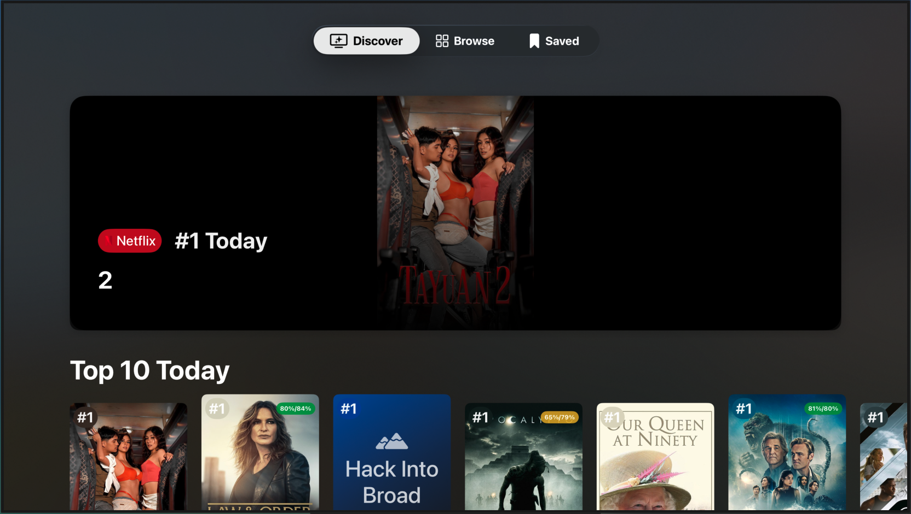
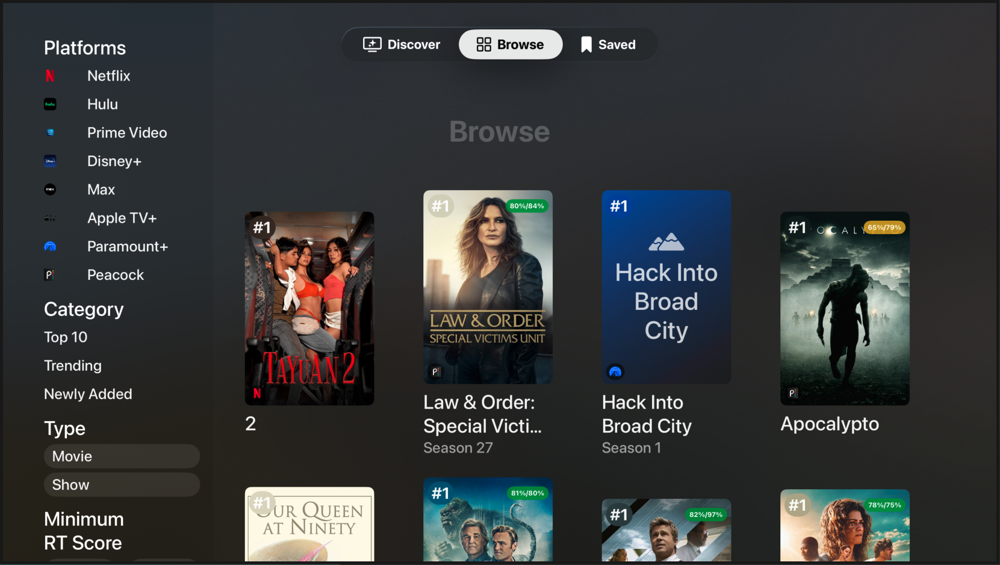
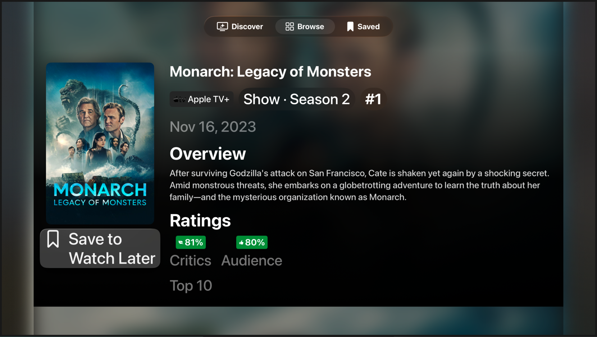
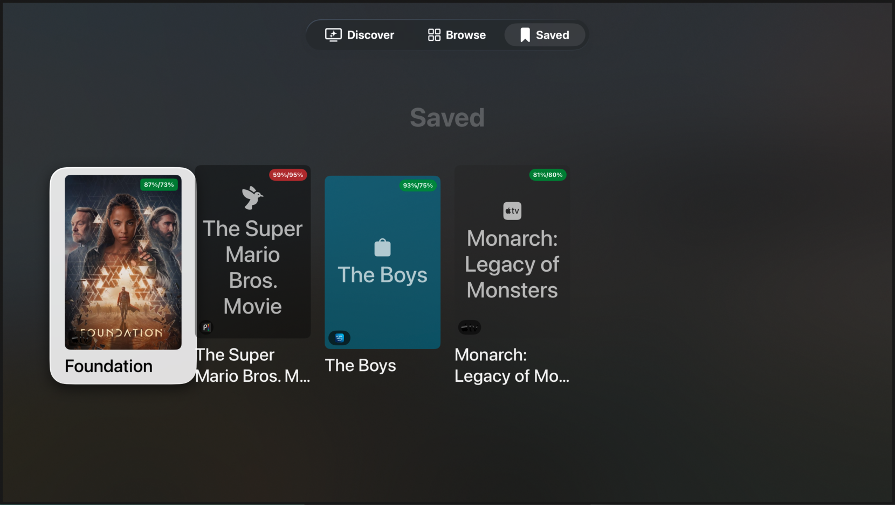
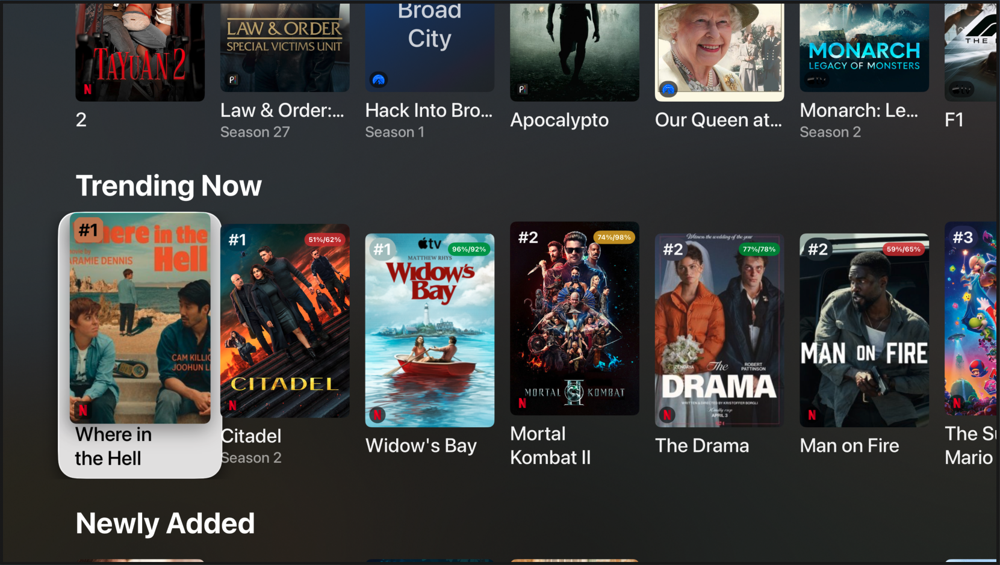

tvOS · SwiftUI · Full-Stack
A native Apple TV app that aggregates trending, top-ranked, and newly added titles across every major streaming platform into a single, focus-driven interface.
App Walkthrough
Each screen is purpose-built for the 10-foot UI with full Siri Remote focus navigation, horizontal carousels, and cinematic detail layouts.

Full-bleed hero card featuring the #1 ranked title, followed by horizontal carousels for Top 10, Trending, and Newly Added. Per-platform rows surface content grouped by service.

Material-backed sidebar with platform, category, type, RT score threshold, and genre filters. Results render in an adaptive LazyVGrid of poster cards.

Cinematic layout with a blurred poster backdrop, two-column design (poster + metadata), RT scores with traffic-light coloring, and a SwiftData-powered Save button.

Personal watchlist persisted with SwiftData. Scores refresh from the network on appear. Context menu allows removal. Cards show RT overlays and platform badges.

TVServices extension surfaces trending titles as a system carousel directly on the Apple TV home screen. Deep links open specific titles within the app.
Technology
Zero third-party Swift dependencies. Every layer uses first-party Apple frameworks or purpose-built backend tooling.
tvOS Client
Data Pipeline (Python)
Infrastructure
Architecture
From API sources through enrichment to the Apple TV screen — two pipelines, one unified experience.
Highlights